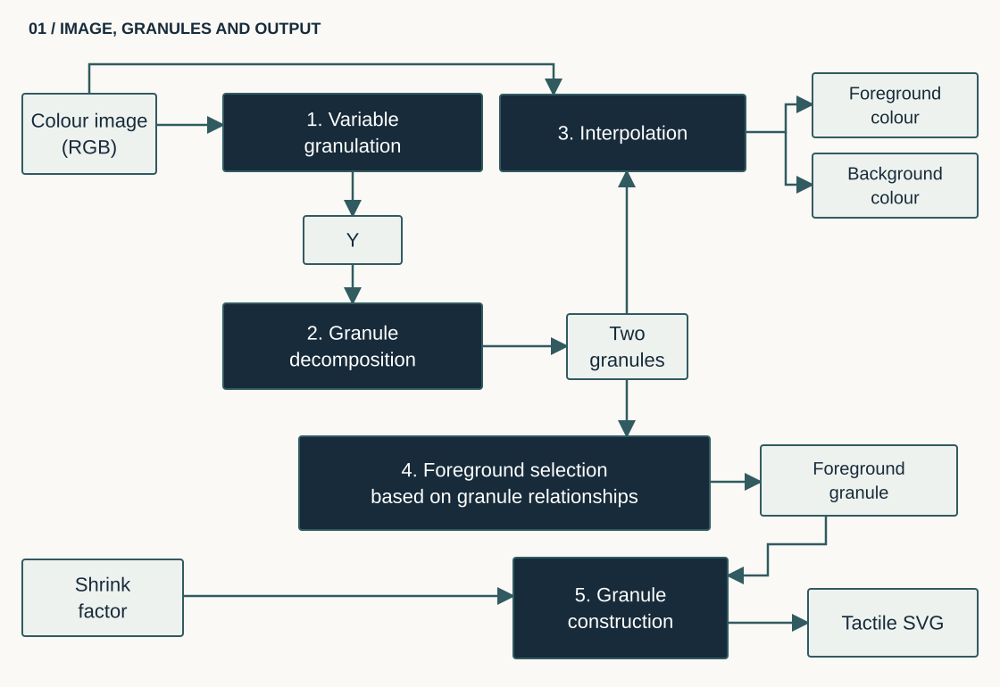
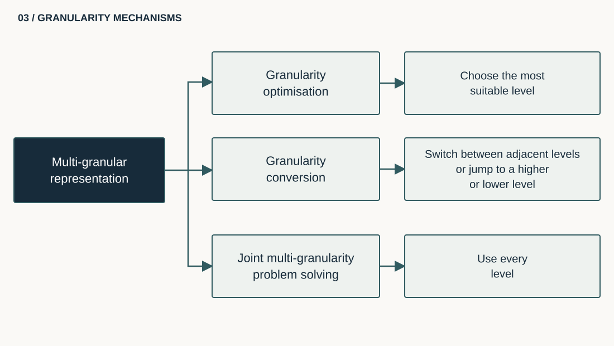
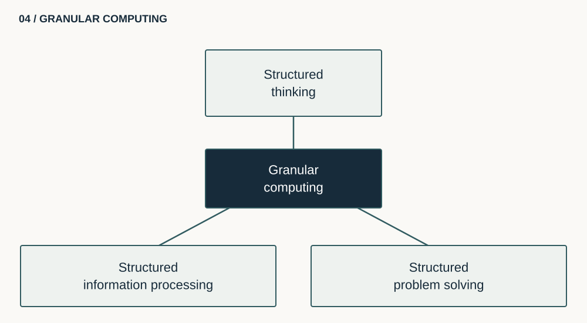
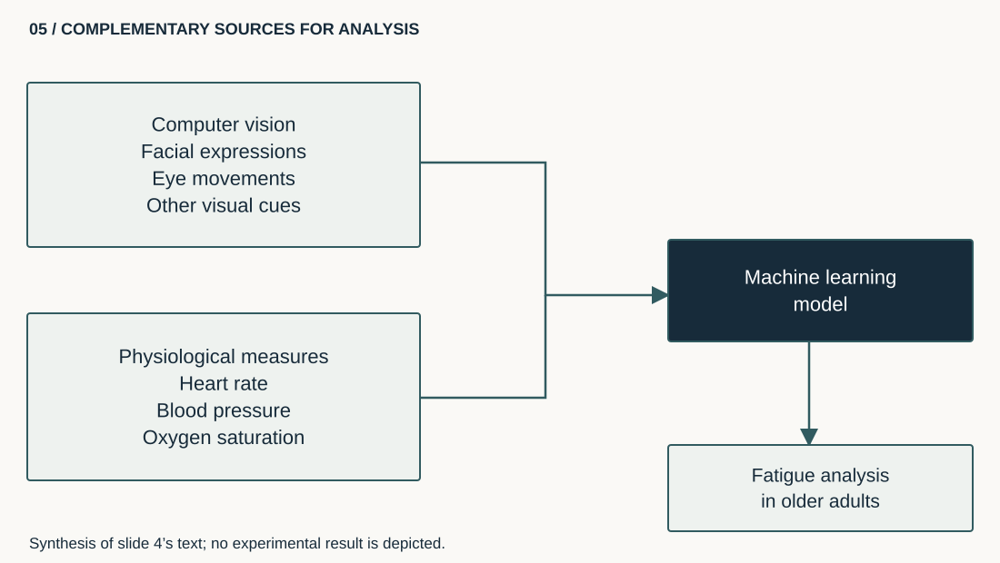

{kind=link}
{kind=link}
{kind=link}
Visual cues
- facial expressions
- eye movements
- behavioural cues associated with fatigue
Scientific work
My research covers image accessibility, multimodal fatigue detection and brain–computer interfaces. The first two areas are illustrated below with diagrams describing the methods used.
Area 1
A multi-granular approach transforms visual content into several levels of information that can be used visually, interactively or through tactile representations.




Area 2
The methods combine computer vision, machine learning and physiological measures to extract complementary indicators.

Area 3
Natural and synthetic data augmentation aims to improve deep-learning robustness when datasets are limited.
Related work: Effect of Natural and Synthetic Noise Data Augmentation on Physical Action Classification by Brain–Computer Interface and Deep Learning (2025).
Scientific supervision
Research supervision in tactile accessibility and health-state prediction using machine learning.
50% co-supervision in an international setting on adapting digital documents into tactile elements for people with specific needs.
25% co-supervision of an international joint PhD on healthcare monitoring and prediction using machine-learning techniques.
{kind=link}